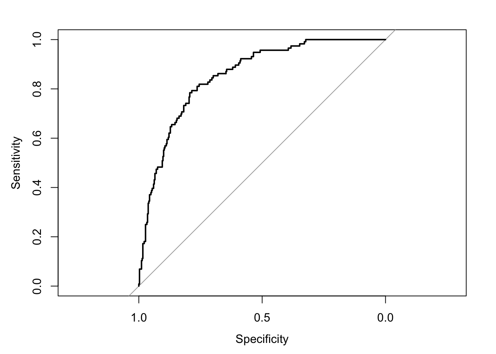

The following objects are masked from 'package:stats':
cov, smooth, var
library(generalhoslem)
필요한 패키지를 로딩중입니다: reshape
다음의 패키지를 부착합니다: 'reshape'
The following object is masked from 'package:Matrix':
expand
필요한 패키지를 로딩중입니다: MASS
# predicted probabilitiespred_y =predict(fit.logistic, data = final_data, type="response")# ROC curveplot.roc(final_data$DI1_dg,pred_y)
Setting levels: control = 0, case = 1
Setting direction: controls < cases

auc(final_data$DI1_dg,pred_y)
Setting levels: control = 0, case = 1
Setting direction: controls < cases
Area under the curve: 0.854
# Hosmer-Lemeshow test## 결과 재확인 필요(2023.08.29)logitgof(final_data$DI1_dg,fitted(fit.logistic))
Warning in logitgof(final_data$DI1_dg, fitted(fit.logistic)): At least one cell
in the expected frequencies table is < 1. Chi-square approximation may be
incorrect.
Hosmer and Lemeshow test (binary model)
data: final_data$DI1_dg, fitted(fit.logistic)
X-squared = 6.9265, df = 8, p-value = 0.5446